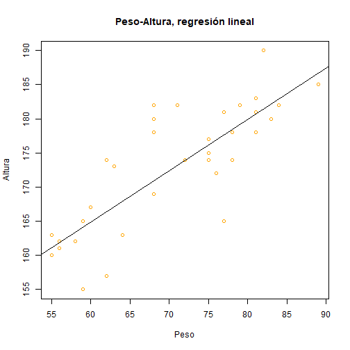

Regresión Lineal
lm
La función lm se usa para ajustar modelos lineales. En nuestro caso, la llevaremos a cabo para regresión. Sin embargo, permite además realizar análisis de varianza o análisis de covarianza
Leemos por ejemplo los datos proporcionados en el fichero datos.txt.
datos<-read.csv("Datos.txt", header=TRUE, sep=",")
regresion <- lm(Altura ~ Peso, data=datos) summary(regresion)
## ## Call: ## lm(formula = Altura ~ Peso, data = datos) ## ## Residuals: ## Min 1Q Median 3Q Max ## -12.6615 -2.1615 -0.6476 2.4586 11.1010 ## ## Coefficients: ## Estimate Std. Error t value Pr(>|t|) ## (Intercept) 119.80453 6.61240 18.118 < 2e-16 *** ## Peso 0.75139 0.09257 8.117 1.82e-09 *** ## --- ## Signif. codes: 0 '***' 0.001 '**' 0.01 '*' 0.05 '.' 0.1 ' ' 1 ## ## Residual standard error: 5.569 on 34 degrees of freedom ## Multiple R-squared: 0.6596, Adjusted R-squared: 0.6496 ## F-statistic: 65.88 on 1 and 34 DF, p-value: 1.825e-09
Ahora bien, podemos obtener los parámetros de la ecuación de la recta de mínimos cuadrados que relaciona la altura con el peso. Dichos valores vienen datos en la columna Estimate anterior. Luego, en este ejemplo, la ecuación de la recta de mínimos cuadrados es: y=119.80x+0.75. La representamos a continuación:
plot(datos$Peso, datos$Altura, xlab="Peso", ylab="Altura", col="orange", main="Peso-Altura, regresión lineal") abline(regresion)
